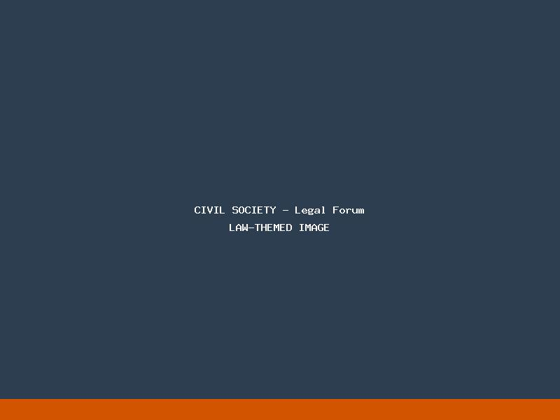

Renforcer les acteurs locaux pour un impact durable
La Fondation pour la promotion des droits reconnaît le rôle crucial que joue la société civile dans la défense et la promotion des droits. Notre mission est de renforcer les capacités des organisations locales, des militants et des collectifs citoyens pour qu'ils puissent agir efficacement sur le terrain.
Nous proposons des programmes de soutien adaptés aux besoins spécifiques des acteurs de la société civile, qu'il s'agisse d'accompagnement technique, juridique, ou de mise en réseau.
Conseils et accompagnement juridique pour les associations et les défenseurs des droits dans leurs activités.
Demander une assistanceFormations et ateliers spécialisés pour développer les compétences des acteurs de la société civile.
Voir nos formationsFacilitation des échanges et des collaborations entre diverses organisations à l'échelle nationale et internationale.
ExplorerAccompagnement dans la conception, mise en œuvre et évaluation de projets en faveur des droits.
Proposer un projetStratégies et outils de plaidoyer pour porter les voix des communautés et influencer les politiques publiques.
RessourcesInformation sur les opportunités de financement et appui à la recherche de fonds pour les organisations locales.
Nous contacterLa Fondation pour la promotion des droits facilite et participe à plusieurs réseaux thématiques qui rassemblent diverses organisations de la société civile. Ces plateformes offrent des opportunités d'échange d'expériences, de coordination d'actions et de mutualisation des ressources.
Coalition d'organisations et d'individus engagés dans la protection et la promotion des droits humains fondamentaux en Algérie.
Alliance d'associations œuvrant pour l'égalité des genres et l'autonomisation des femmes à travers différentes régions.
Espace dédié aux organisations dirigées par des jeunes et travaillant sur les problématiques de la jeunesse et de l'engagement civique.
Un programme d'accompagnement intensif pour les nouvelles associations et initiatives citoyennes dans leur phase de démarrage.
Mécanisme de soutien pour les défenseurs des droits confrontés à des risques ou des menaces en raison de leur travail.
Programme visant à renforcer les structures de gouvernance et les processus organisationnels des associations établies.
Vous êtes une organisation de la société civile, une association ou un collectif citoyen ? Rejoignez nos réseaux pour renforcer votre impact et bénéficier de nos programmes de soutien.